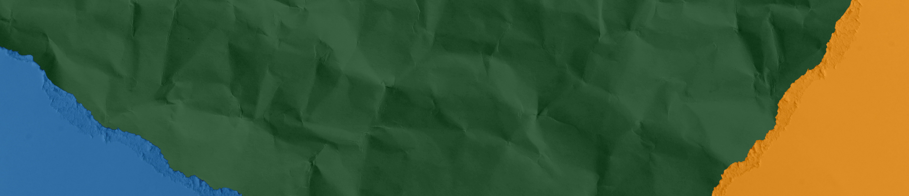

Proyecto de cooperación territorial
MAC‑IDAFE es un proyecto de cooperación territorial cofinanciado por el Programa Interreg MAC 2021–2027 que impulsa la creación de una Red de Escuelas por la Acción Climática en los territorios de Canarias, Azores, Madeira y Cabo Verde.
El proyecto responde a un desafío común: la especial vulnerabilidad climática de los territorios insulares atlánticos. Sequías, incremento de temperaturas, presión sobre recursos hídricos, riesgos costeros y pérdida de biodiversidad exigen respuestas estructurales que integren la educación como eje transformador.
En este contexto, la educación se convierte en una herramienta estratégica de transformación territorial. MAC‑IDAFE sitúa la alfabetización climática, la capacitación docente y la acción educativa como pilares para fortalecer la resiliencia de la Macaronesia y consolidar una cooperación duradera entre sistemas educativos.
Además, el proyecto capitaliza el trabajo desarrollado previamente en Canarias a través del Plan Formativo Verde y la Estrategia de Educación Ambiental de Canarias, impulsados por la Consejería de Transición Ecológica y Energía mediante encargo a GESPLAN.
La educación se posiciona como palanca de transformación territorial y cohesión macaronésica.

Promoviendo la incorporación estructural del cambio climático en los sistemas educativos y en la planificación institucional.
Construyendo herramientas transferibles que respeten las singularidades de cada territorio insular.

Impulsando respuestas educativas que conecten adaptación, mitigación y transformación social.
Generando una red estable de colaboración entre centros, administraciones y agentes territoriales.
Favoreciendo procesos formativos aplicados, participativos y vinculados al entorno real del alumnado.
Diseñando una estructura estable que permanezca más allá de la finalización formal del proyecto.
17 octubre 2025 → 16 abril 2026
Analizar las diferentes realidades y necesidades de los territorios en materia de educación y cambio climático.
Cada territorio analiza, desde una lógica de cooperación territorial, sus necesidades educativas para integrar el cambio climático en los itinerarios formativos y en la práctica escolar.
→ Se identifican diagnósticos, oportunidades, barreras y capacidades existentes.
17 abril 2026 → 16 octubre 2026
Diseñar un marco pedagógico común adaptado a los contextos regionales y desarrollar herramientas y materiales para cada uno de los territorios.
Las necesidades detectadas se transfieren a materiales, herramientas y marcos metodológicos adaptados a cada contexto insular.
→ Se construye un modelo común con capacidad de aplicación regional.
17 octubre 2026 → 16 octubre 2027
Llevar a cabo el proyecto educativo resultante en las dos primeras etapas a las aulas.
Las herramientas educativas se llevan a la práctica en los centros participantes.
→ Cada región (Canarias, Azores, Madeira y Cabo Verde) desarrolla sus propios materiales y estrategias de aplicación, dentro de una estructura compartida.
El cambio climático se incorpora de forma transversal en el currículo escolar y en la planificación educativa.
El profesorado dispone de metodologías activas, herramientas prácticas y formación orientada a la acción.
El alumnado participa como agente de cambio, conectando aprendizaje, territorio y acción climática.
Los centros se integran en una Red de Escuelas por la Acción Climática con vocación de continuidad e intercambio estable.
La Red constituye el principal legado estructural del proyecto y articula cooperación educativa permanente entre centros de Canarias, Azores, Madeira y Cabo Verde, favoreciendo el aprendizaje compartido, la transferencia de buenas prácticas y la consolidación de estrategias escolares de acción climática.
No se plantea como una actuación puntual, sino como una estructura de continuidad diseñada para crecer y mantenerse en el tiempo.


La Red está concebida para continuar tras la finalización del proyecto, ampliando su alcance e incorporando nuevos centros educativos de la Macaronesia.
El objetivo no es únicamente ejecutar un proyecto, sino consolidar una estructura regional de cooperación educativa capaz de sostener políticas climáticas con impacto real y continuidad institucional.
Si los diagnósticos se transforman en herramientas útiles, las herramientas en experiencias educativas reales y esas experiencias en una red estable de centros comprometidos, MAC‑IDAFE puede convertirse en una de las iniciativas más transformadoras del Programa Interreg MAC.
Condición insular y alta exposición a impactos climáticos extremos.
Dependencia de recursos naturales limitados, vulnerables y estratégicos.
Necesidad de adaptación educativa contextualizada al territorio.
Retos compartidos: sequías, aumento de temperaturas, presión hídrica, riesgos costeros y pérdida de biodiversidad.
Oportunidad de construir soluciones comunes desde la cooperación entre regiones atlánticas.
SOCIO PRINCIPAL:

SOCIOS FEDER:


SOCIO DE TERCER PAÍS AFRICANO: